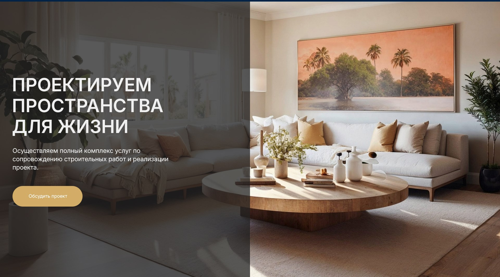

Сейчас в вёрстке
rgba(3, 36, 71, .75) фирменный navy
Дизайн интерьера и экстерьера
Создаём цельный образ дома — от планировки комнат до фасада и входной группы.
Обсудить проект
rgba(3, 36, 71, .75) фирменный navy
Создаём цельный образ дома — от планировки комнат до фасада и входной группы.
Обсудить проектrgba(34, 34, 34, .75) нейтральный серый
Создаём цельный образ дома — от планировки комнат до фасада и входной группы.
Обсудить проектПочему верхняя полоса выглядит иначе. В макете под слоем другая фотография — та, что была до того, как ты прислал peaper.jpg. Сравнивать надо не картинку целиком, а оттенок затемнения: холодный синий против нейтрального серого. Кнопка «Сдвинуть встык» подрезает полосы, чтобы затемнённые половины оказались рядом.
Замер, если интересно. Регрессия по 1060 парам пикселей у шва даёт цвет 33.9 / 33.7 / 33.7 по каналам — одинаково во всех трёх, значит слой нейтральный. Обратное наложение: у серого средняя ошибка 1.27 из 255 при собственном шуме JPEG 5.08, у синего — 17.58.